Icon list
Every icon sits on the same 240 × 200 canvas and fills the same share of it, so any icon can replace any other and come out the same size. Floating fruit all share a 120 × 120 canvas.
How to swap an icon
Find the spot in Where they're used below. It shows the page file and the icon there now.
On GitHub, open that page file and tap the pencil to edit.
Use find (Ctrl+F or Cmd+F) to search for the old file name, for example drink-smoothie.svg.
Change only the name, for example to food-mango.svg. Keep the folder part (../assets/illustrations/) as it is.
Commit. The site updates in a minute or two.
Floating fruit are set in script.js, in the list called FLOATS. Change the fruit name there, for example 'strawberry' to 'lemon' (the name without float- and .svg).
New icons: see HOW-TO-CHANGE-ICONS.md.
Where they're used
Illustrations (252) 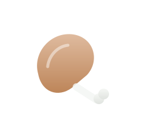
draft-chicken-drumstick.svg draft-chopping-board.svg 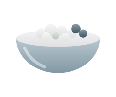
draft-cottage-cheese-bowl.svg 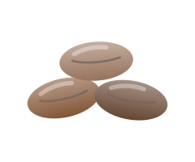
draft-dates.svg 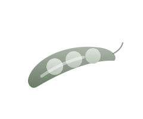
draft-edamame.svg draft-finisher-medal.svg 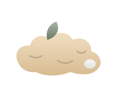
draft-ginger-root.svg 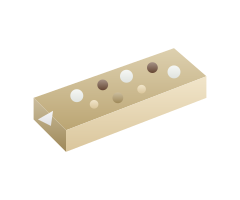
draft-granola-bar.svg 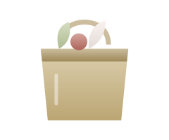
draft-grocery-bag.svg draft-hourglass.svg 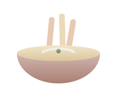
draft-hummus-veggie-sticks.svg draft-journal-pen.svg 
draft-kefir-bottle.svg 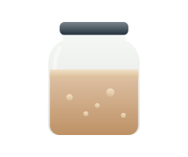
draft-kombucha-jar.svg draft-meal-prep-containers.svg draft-measuring-cup.svg 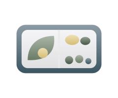
draft-packed-lunch-box.svg 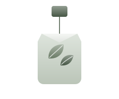
draft-peppermint-tea-bag.svg 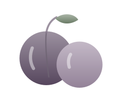
draft-plums.svg 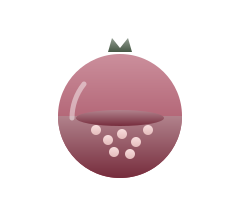
draft-pomegranate.svg draft-salad-bowl.svg 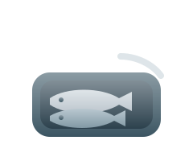
draft-sardine-tin.svg 
draft-sauerkraut-jar.svg 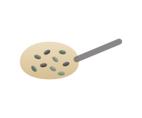
draft-seeds-in-a-spoon.svg 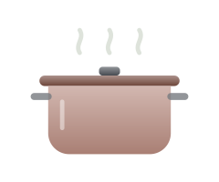
draft-soup-pot.svg draft-stopwatch.svg draft-tofu-cubes.svg 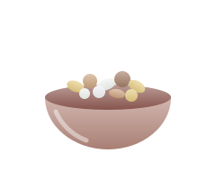
draft-trail-mix-bowl.svg 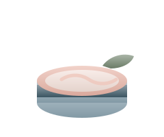
draft-tuna-can.svg 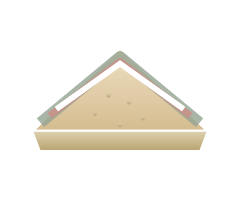
draft-whole-grain-sandwich.svg drink-coffee.svg 
drink-lemon-water.svg 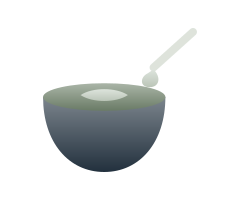
drink-matcha.svg 
drink-milk.svg 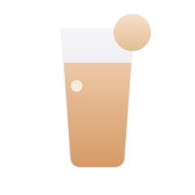
drink-orange-juice.svg 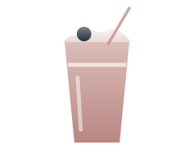
drink-smoothie.svg 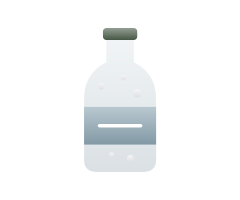
drink-sparkling.svg drink-tea.svg 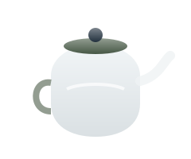
drink-teapot.svg eat-bento.svg 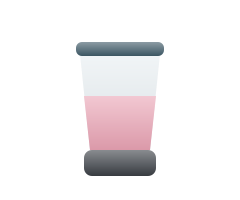
eat-blender.svg 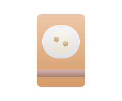
eat-cereal-box.svg 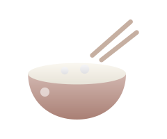
eat-chopsticks-bowl.svg eat-cutting-board.svg 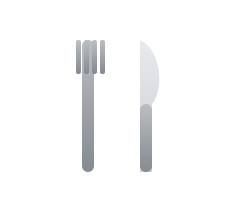
eat-fork-knife.svg 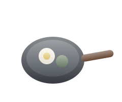
eat-frying-pan.svg 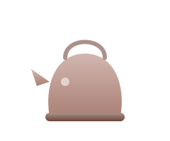
eat-kettle.svg eat-kitchen-scale.svg eat-measuring-spoons.svg 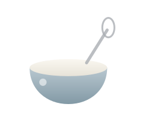
eat-mixing-bowl.svg eat-mug.svg 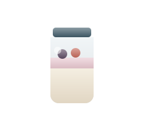
eat-overnight-oats.svg 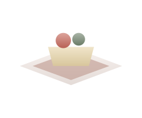
eat-picnic.svg eat-place-setting.svg 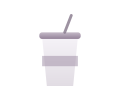
eat-reusable-straw-cup.svg 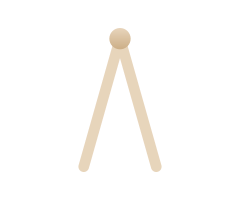
eat-salad-tongs.svg 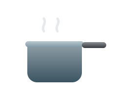
eat-saucepan.svg 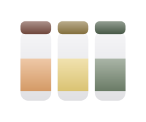
eat-spice-jars.svg 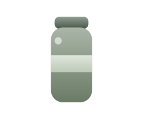
eat-thermos.svg 
eat-water-glass.svg 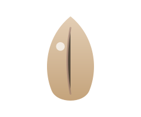
food-almond.svg 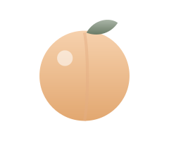
food-apricot.svg 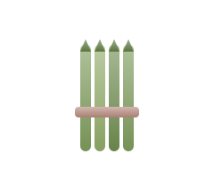
food-asparagus.svg 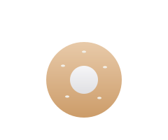
food-bagel.svg 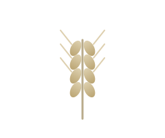
food-barley.svg food-basil.svg 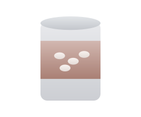
food-beans-can.svg 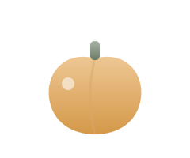
food-bell-pepper.svg food-blackberries.svg food-bread.svg food-cabbage.svg food-cashews.svg food-cauliflower.svg food-cheese.svg food-chia-pudding.svg food-chicken-breast.svg food-chicken.svg food-chickpeas.svg food-cinnamon.svg food-coconut.svg food-coffee-beans.svg food-dark-chocolate.svg food-egg.svg food-ginger-tea.svg food-hard-boiled-egg.svg food-honey.svg food-honeycomb.svg food-kale.svg food-lentil-bowl.svg food-lettuce.svg food-lime.svg food-mango.svg food-muffin.svg food-nut-butter.svg food-oat-bowl-plum.svg food-oat-bowl.svg food-olive-oil.svg food-olives.svg food-pancakes.svg food-pasta.svg food-pistachios.svg food-plate.svg food-popcorn.svg food-potato.svg food-pumpkin.svg food-quinoa-bowl.svg food-raspberries.svg food-red-onion.svg food-rice-bowl.svg food-salmon.svg food-seaweed.svg food-shrimp.svg food-smoothie-bowl.svg food-sourdough.svg food-steak.svg food-sushi.svg food-tea-leaves.svg food-tempeh.svg food-tofu.svg food-turmeric.svg food-walnuts.svg food-wheat.svg food-wrap.svg food-yogurt.svg food-zucchini.svg fruit-apple.svg fruit-avocado.svg fruit-banana.svg fruit-berries.svg fruit-blueberries.svg fruit-cherries.svg fruit-fig.svg fruit-grapes.svg fruit-kiwi.svg fruit-lemon-slice.svg fruit-lemon-sprig.svg fruit-lime.svg fruit-mango.svg fruit-orange.svg fruit-peach.svg fruit-pear.svg fruit-pineapple.svg fruit-plum.svg fruit-pomegranate.svg fruit-raspberry.svg fruit-strawberry.svg fruit-watermelon.svg herb-basil.svg herb-leaf-pale.svg herb-leaf.svg herb-mint.svg herb-rosemary.svg herb-sprig.svg object-bike.svg object-bottle.svg object-bowl.svg object-bubbles.svg object-calendar.svg object-checklist.svg object-clock.svg object-compass.svg object-cutlery.svg object-cutting-board.svg object-dumbbell.svg object-flower.svg object-grocery-bag.svg object-jar-navy.svg object-jar.svg object-jumprope.svg object-kettlebell.svg object-lab.svg object-magnifier.svg object-measuring-cup.svg object-mug.svg object-notebook.svg object-phone.svg object-plate-blue.svg object-plate.svg object-saucepan.svg object-shaker-clay.svg object-shaker.svg object-shield.svg object-signpost.svg object-sneaker.svg object-sprout-oat.svg object-sprout.svg object-sunmoon.svg object-whisk.svg object-yogamat.svg plan-clipboard.svg plan-goal-flag.svg plan-habit-tracker.svg plan-kitchen-timer.svg plan-lunch-bag.svg plan-notebook.svg plan-open-journal.svg plan-pencil.svg plan-recipe-card.svg plan-sticky-notes.svg plan-water-tracker.svg plan-weekly-planner.svg shop-basket.svg shop-cart.svg shop-egg-carton.svg shop-list-phone.svg shop-milk-carton.svg shop-paper-bag.svg shop-price-tag.svg shop-produce-scale.svg shop-receipt.svg shop-tote.svg spice-cinnamon.svg spice-ginger.svg sun.svg veg-asparagus.svg veg-beet.svg veg-broccoli.svg veg-carrot.svg veg-cauliflower.svg veg-corn.svg veg-cucumber.svg veg-eggplant.svg veg-garlic.svg veg-greens.svg veg-kale.svg veg-mushroom.svg veg-onion.svg veg-pea-pod.svg veg-peas.svg veg-pepper.svg veg-potato.svg veg-radish.svg veg-sweet-potato.svg veg-tomato.svg veg-zucchini.svg well-bath.svg well-bed.svg well-bike-helmet.svg well-candle.svg well-dumbbells.svg well-footsteps.svg well-heart-leaf.svg well-jump-rope.svg well-meditation-cushion.svg well-plant.svg well-running-shoe.svg well-sleep-pillow.svg well-stretch-band.svg well-sun-hat.svg well-towel-roll.svg well-water-bottle.svg well-yoga-mat.svg Floating fruit (16) almond berries carrot cherries fig grapes-light leaf-light leaf lemon mint-light mint peas pineapple sprig strawberry watermelon